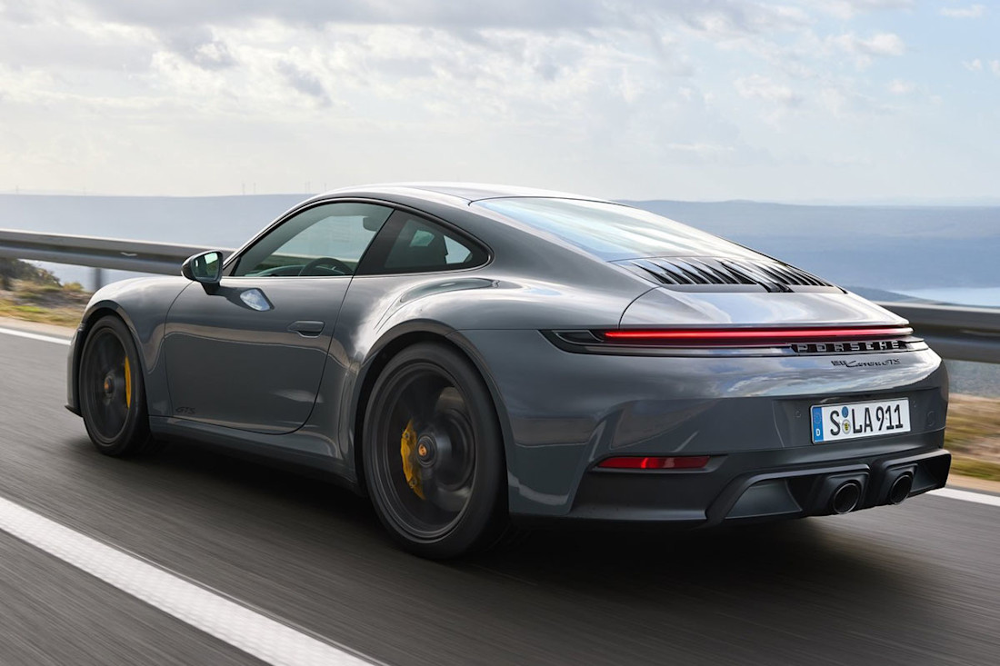

De los cuatro coches del proyecto, este es el que más me gusta.
Me gusta porque mantiene la misma forma reconocible desde hace décadas, pero cada versión nueva es más rápida y moderna.
Según mi catálogo, la versión de 2019 tiene 385 CV, acelera en 4.2 s y llega a 293 km/h.

Marca ............. Porsche Modelo ............ 911 Carrera Año ............... 2019 Potencia .......... 385 CV Aceleración ....... 4.2 s Velocidad máxima .. 293 km/h Tipo .............. Deportivo Motor ............. Bóxer de 6 cilindros, trasero Debut del 911 ..... 1963
El 911 se presentó en 1963 en el Salón de Frankfurt y desde entonces ha mantenido su motor bóxer trasero.
El nombre Carrera recuerda a la Carrera Panamericana, una competición en la que Porsche ganó en su categoría a principios de los años 50.
© 2026 Francisco Martinez Berzal